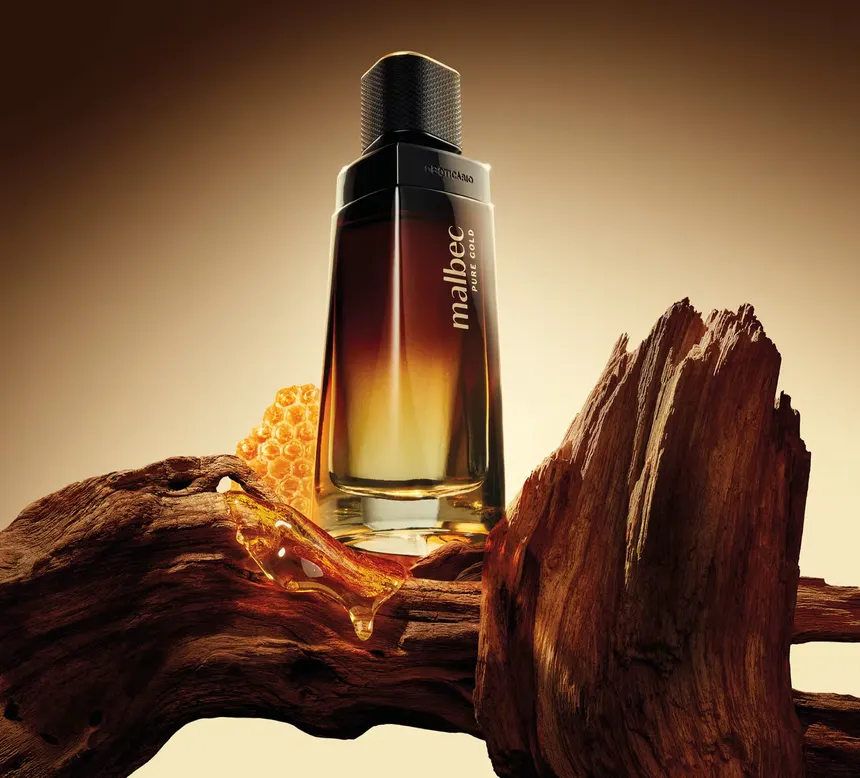

Malbec é um perfume masculino da marca francesa de luxo, lançado em 2011. Ele é conhecido por sua fragrância intensa e sofisticada, que combina notas amadeiradas, frutadas e especiadas. O perfume é inspirado na uva Malbec, que é usada para produzir vinhos tintos encorpados e ricos em sabor. Malbec é uma escolha popular para homens que procuram um perfume marcante e elegante.